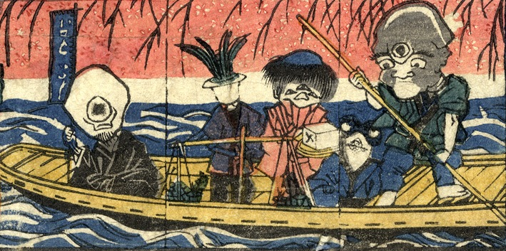

小舟に乗った化物たち。三つ目の入道が船頭である。舟の先には幟をもった一つ目の僧侶らしき化物が座っている。真ん中には天秤棒を持った植木の化物、三つ目の豆腐小僧、蛙の化物がいる。
著作者：貞秀／出典：親書誌：U426_nichibunken_0227：新板化物づくし；シンパンバケモノヅクシ／日付：2010／資源識別子：U426_nichibunken_0227_0016_0000
Copyright (c)2010- International Research Center for Japanese Studies, Kyoto, Japan. All rights reserved.